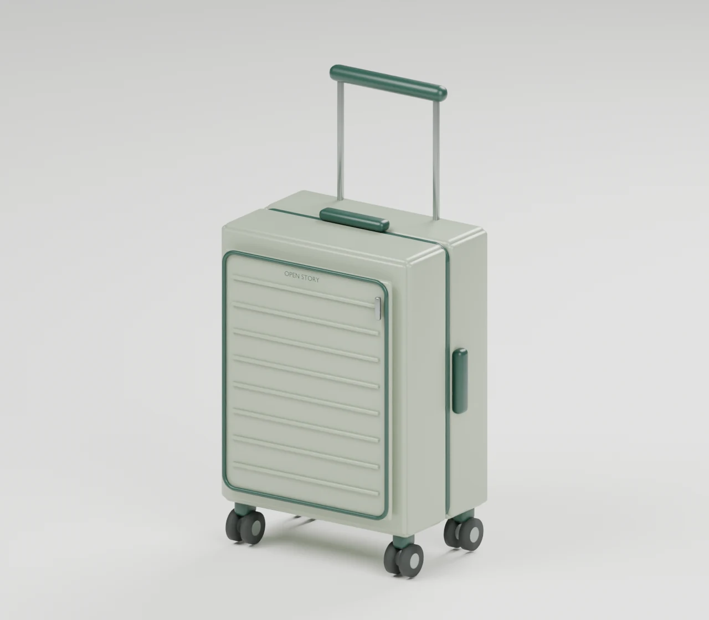

Design the next Open Story.
A development concept, built from the research.

Original Blender concept · design targets, not tested specifications
Loading the 3D model. The Blender render remains available.
The original, your revision, and the reason for every change
Original vs revised specifications.
Choose the retail product you want to develop from. The revised column follows your current 3D choices.
The 3D scene shows your development concept. It is not a replica or an interactive model of the selected retail product.
View all 16 specifications and validation details
| Specification | Original retail product | Your revised concept | What changes & why | Proof still needed |
|---|
What changed from the base Blender concept?
The base sage cabin concept is a separate development starting point. It is not the original Target suitcase.
Development details
Understand every proposed upgrade.
See the selected change, intended benefit, trade-off, what the 3D model represents, and the work needed to prove it. Features switched off remain visible as exclusions.
Sources, recommendations & prototype checks
Learn from the directory.
Evidence-linked inspiration; not a copy or a claim of equivalence.
View all Open Story opportunitiesTrade-offs to resolve
Before this becomes a product.
Compare with your shortlist.
The concept has design targets. Directory prices and photos remain saved, dated research evidence.